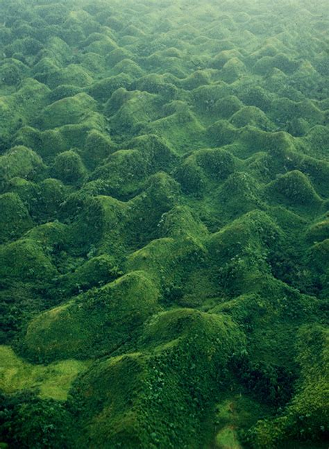

Principi Generali dell’Influenza Climatica
Controllo Termico dei Processi
Legge di Arrhenius: ogni +10°C → velocità di reazione raddoppia
Implicazioni per il carsismo:
- Climi caldi → processi accelerati
- Climi tropicali → carsismo intenso e rapido
- Variazioni stagionali → ritmi differenziati
Estensione dell’Alterazione
- Principio: aumento temperatura → aumento solubilità generale
- Conseguenza: in climi caldi anche rocce normalmente insolubili possono essere soggette a processi simil-carsici
Processi Carsici in Climi Caldi e Umidi
Carsismo Epigeo Tropicale
Microforme in Ambiente Tropicale
Caratteristiche Generali
- Estensione processuale: degradazione non limitata ai carbonati
- Intensificazione: tutti i processi di dissoluzione accelerati
- Morfologie: simili ma più marcate rispetto a climi temperati
Controlli Ambientali
- Temperatura: costantemente elevata
- Umidità: elevata tutto l’anno o stagionale
- Attività biologica: intensa produzione acidi organici
Macroforme Tropicali
Cockpits e Demi-oranges
Condizioni di formazione:
- Piovosità elevata: precipitazioni intense e concentrate
- Presenza argille rosse: sui fondi delle depressioni
- Drenaggio impedito: ritenzione idrica localizzata
Morfologia e processi:
- Depressioni a valloni: con inghiottitoio al fondo
- Accumulo argille rosse: impermeabilizzazione parziale
- Scorrimento acqua: sui versanti → corrosione marginale
- Fluviocarsismo: fondi piatti tipo polje
Evoluzione del paesaggio:
- Valloni separati: da colline emisferiche (demi-oranges)
- Pattern: depressioni isolate + rilievi arrotondati

Mogotes
Definizione: evoluzione avanzata di cockpits e demi-oranges
Processo evolutivo:
- Valloni sempre più isolati e profondi
- Colline sempre più separate e steep-sided
- Hoyos: grandi depressioni pianeggianti tra i valloni
Caratteristiche cubane:
- Hoyos: coltivati tradizionalmente per fertilità
- Fertilità: derivata da argille rosse accumulate
- Origine: formazione su piattaforme carbonatiche
Controllo strutturale: tipico di piattaforme carbonatiche poco deformate
Carso a Torri (Fenglin)
Definizione: evoluzione estrema dei mogotes
Condizioni di formazione:
- Livello di base carsico: molto alto
- Posizione: poco sotto quota fondo depressioni
- Azione corrosiva: solo marginale sui rilievi
Morfologia risultante:
- Mogotes cilindrici: sempre più stretti e distanziati
- Torri isolate: rilievi carbonatici verticali
- Pianura unificata: fusione degli hoyos
- Paesaggio finale: torri emergenti da pianura continua
Distribuzione: Cina meridionale, Vietnam, Thailandia
Carsismo Ipogeo Tropicale
Caratteristiche Generali
- Grotte poco profonde: ma molto numerose
- Densità elevata: sistemi carsici complessi
- Livello di base alto: limitazione sviluppo verticale
Trafori Idrogeologici
Definizione: gallerie che collegano due piane a quote diverse
Formazione:
- Tipici di carsi a mogotes e torri
- Collegamento tra depressioni adiacenti
- Funzione di drenaggio sotterraneo
Evoluzione:
- Abbassamento livello di base → formazione livelli multipli
- Sistemi sovrapposti: più generazioni di trafori
- Complessità crescente: reticoli tridimensionali
Modellamento Costiero Tropicale
Bilancio Carbonatico Positivo
Condizioni Speciali
Paradosso tropicale: formazione > corrosione di rocce carbonatiche
Cause:
- Organismi carbo-fissatori: alghe calcaree, coralli
- Produttività biologica: elevatissima in acque calde
- Sedimentazione: continua formazione nuovi carbonati
Processi Costruttivi vs Distruttivi
- Costruzione: barriere coralline, beach rock
- Distruzione: carsismo litorale intenso
- Bilancio netto: spesso positivo per costruzione
Carsismo Litorale Intenso
Fattori di Intensificazione
- Escursione termica diurna: forte variabilità
- Evaporazione intensa: concentrazione sali
- Spray salino: apporto continuo NaCl
- Onde: azione meccanica aggiuntiva
Morfologie delle Falesie Tropicali
Caratteristiche Generali
- Assenza vegetazione: alta salinità delle pareti
- Corrosione intensa: aloclastismo + dissoluzione
- Morfologia a visiera: fortemente incavate alla base
Meccanismi di Formazione
Aloclastismo dominante:
- Cristallizzazione sali negli spray
- Rigonfiamento e fratturazione
- Disgregazione granulare
Evaporazione elevata:
- Concentrazione soluzioni saline
- Effetto amplificato del sale
- Cicli cristallizzazione-dissoluzione
Microforme Costiere Tropicali
Strutture Simil-Tsingy
Agenti di formazione:
- Idroclastismo: rigonfiamento-contrazione
- Cianoficee litofite: microrganismi perforanti
- Biocorrosione: acidi organici da attività microbica
Morfologia:
- Lame taglienti verticali
- Separazione di vasche carsiche
- Pattern labirinto complesso
Vasche Litorali
Meccanismo di formazione:
- Notte: arresto fotosintesi alghe
- Accumulo CO₂: in acqua stagnante
- Acqua corrosiva: saturazione acida
- Corrosione: formazione vasche nel tempo
Morfologia risultante:
- Vasche simili a kamenitze
- Separate da strutture simil-tsingy
- Pattern poligonale caratteristico
Relitti di Forme Carsiche Tropicali nelle Zone Temperate
Eredità Paleoclimatiche
Condizioni Quaternarie
Durante parti del Quaternario molte regioni oggi temperate hanno sperimentato condizioni tropicali o subtropicali
Evidenze in Italia:
- Presenza cockpits in Liguria
- Morfologie tropicali relitte
- Sistemi carsici incompatibili con clima attuale
Cockpits Liguri
Caratteristiche Originarie
- Formazione: durante periodi più caldi
- Morfologia: depressioni caratteristiche tropicali
- Associazioni: con altre forme tropicali
Evoluzione Post-Formazione
Rimodellamento climatico:
- Sollevamento tettonico: modificazione altimetrica
- Smembramento: per erosione differenziale
- Distruzione parziale: processi temperati successivi
Trasformazione morfologica:
- Da depressione chiusa: a valloni aperti
- Collegamento: con reticolo fluviale esterno
- Perdita: delle caratteristiche carsiche originarie
Trafori Idrogeologici Relitti
Distribuzione: anche in zone oggi temperate Significato: testimonianza di carsi tropicali antichi Evoluzione: spesso inattivi o modificati
Significato Paleoclimatico
- Indicatori: di condizioni climatiche passate
- Cronologia: datazione relative dei cambiamenti
- Evoluzione: ricostruzione storia climatica regionale
Carsismo in Italia
Ricchezza e Diversità
L’Italia: tra i paesi più ricchi di fenomeni carsici al mondo
Fattori di Controllo
Controlli Altitudinali
- Importanza: altitudine > latitudine per controlli climatici
- Gradienti: verticali più marcati di quelli orizzontali
- Zonazione: effetti altitudinali dominanti
Controlli Litologici
- Tipo di roccia: calcari, dolomie, gessi
- Purezza: percentuale carbonatica
- Struttura: fratturazione, stratificazione
Evoluzione Geomorfologica
- Storia: evoluzione pre-carsica del paesaggio
- Paleosuperfici: eredità morfologiche
- Controlli strutturali: tettonica regionale
Differenze Climatiche Regionali
Forme ipogee: particolarmente sensibili al clima
Zonazione climatica:
- Aree fredde: acqua insatura da fusione neve
- Zone ad alta piovosità: carso coperto, drenaggi concentrati
- Zone aride: carso nudo, infiltrazione diffusa
Caratteristiche Regionali del Carsismo Italiano
Aree Fredde (Alta Quota)
Processi dominanti:
- Acqua insatura: da fusione neve e ghiaccio
- Corrosione superficiale limitata: basse temperature
- Infiltrazione efficace: nelle fratture
- Grotte profonde: sviluppo verticale marcato
Morfologie caratteristiche:
- Carso nudo di alta quota
- Sistemi ipogei profondi
- Microforme da crioclastismo + carsismo
Zone ad Alta Piovosità
Caratteristiche climatiche:
- Precipitazioni: ben distribuite nell’anno
- Vegetazione: densa e continua
- Copertura: carso coperto dominante
Conseguenze morfologiche:
- Punti di assorbimento: pochi ma grandi
- Deflussi sotterranei: pochi ma portate elevate
- Sistemi carsici: meno densi ma più grandi
- Grotte: gallerie ampie, sistemi lineari
Zone Aride e Stagionali
Caratteristiche climatiche:
- Precipitazioni: scarse e concentrate
- Stagionalità: marcata alternanza umido-secco
- Vegetazione: rada e discontinua
Conseguenze morfologiche:
- Carso nudo: esteso e ben sviluppato
- Infiltrazione diffusa: su tutta la superficie
- Sistemi carsici: densi e complessi
- Gallerie paragenetiche: da variazioni stagionali
Controlli Litologici Specifici
Calcari Puri
- Solubilità: elevata e uniforme
- Morfologie: ben sviluppate
- Sistemi: grandi e continui
Calcari Impuri
- Residui insolubili: argille, sabbie
- Intasamento: fessure e condotti
- Evoluzione: verso forme a fondo piatto
Dolomie
- Fratturazione: più intensa
- Sistemi: più frammentati
- Morfologie: meno spettacolari
Carsi di Alta Quota
Caratteristiche Specifiche
Controlli climatici dominanti:
- Temperatura: sempre bassa
- Precipitazioni: spesso nevose
- Stagionalità: marcata con blocco invernale
Processi Caratteristici
Criocarsismo: combinazione gelo + carsismo
- Meccanismi: fratturazione + dissoluzione
- Efficacia: amplificazione reciproca processi
- Tempi: concentrati in stagioni di transizione
Morfologie Alpine
- Carri: solchi da neve permanente
- Grotte di ghiaccio: in ghiacciai su carbonati
- Sistemi misti: crionici + carsici
Distribuzione e Esempi Significativi
Alpi
- Carso del Carso: area classica
- Dolomiti: carso in dolomie
- Alpi Apuane: marmi carsificati
Appennini
- Appennino settentrionale: carsi in calcari marnosi
- Appennino centrale: grandi sistemi (Majella, Sirente)
- Appennino meridionale: carsi mediterranei
Isole
- Sardegna: carsi paleozoici
- Sicilia: carsi mesozoici e terziari
Significato del Carsismo Italiano
Importanza Scientifica
- Laboratorio naturale: diversità di condizioni
- Evoluzione: storia geologica complessa
- Modelli: per carsismo mondiale
Importanza Economica
- Risorse idriche: acquiferi carsici
- Turismo: grotte e paesaggi
- Materiali: cave di carbonati
Problematiche Gestionali
- Vulnerabilità: acquiferi carsici
- Rischi: crolli e subsidenze
- Conservazione: patrimonio geomorfologico